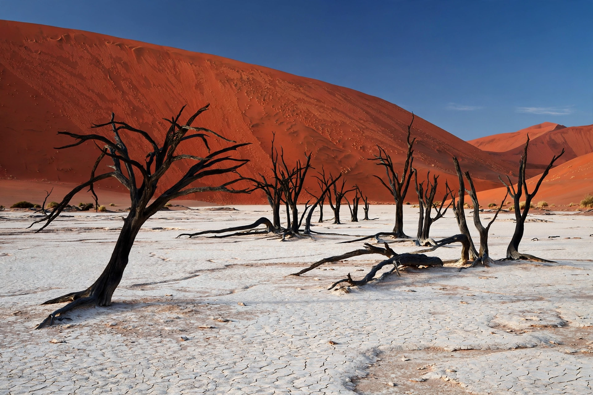

Wikipedia — the free encyclopedia

Deadvlei is a white clay pan in the Namib Desert of Namibia, within the Sossusvlei area of Namib-Naukluft National Park. Its name means "dead marsh" in Afrikaans/Namibian usage. The pan is famous for its stand of dead camelthorn trees — killed when the Tsauchab River's floods were cut off as dunes shifted some 600–900 years ago — whose blackened skeletons, scorched by the sun and too dry to decay, stand against white clay, rust-red dunes and blue sky.
Deadvlei is reached from Sesriem via Sossusvlei, across the last stretch in 4x4 vehicles or on foot; the dune known as Big Daddy (about 325 m) overlooks the pan. It is among the most photographed landscapes in Africa.